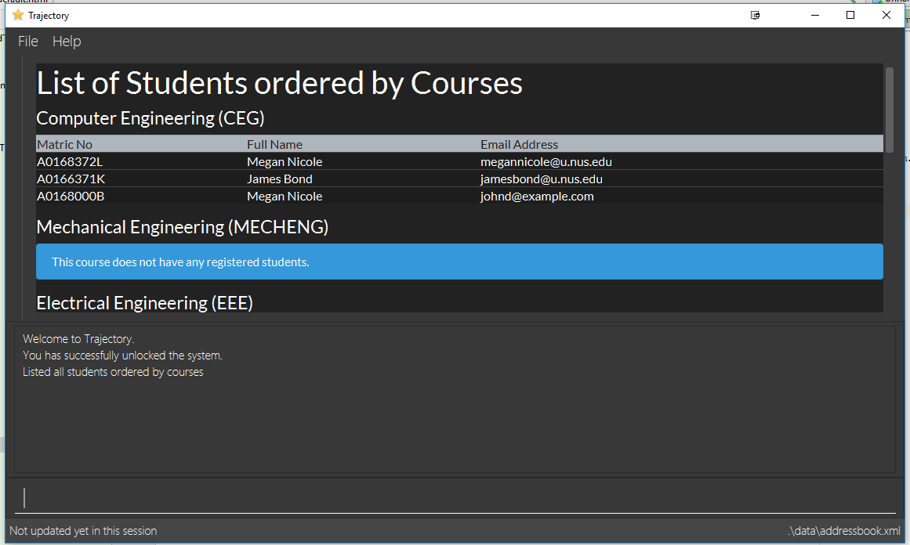

By: T16-1 Since: Aug 2018 Licence: MIT
- 1. Introduction
- 2. Quick Start
- 3. Features
- 3.1. Viewing help :
help - 3.2. Adding a person:
add - 3.3. Listing all persons :
list - 3.4. Editing a person :
edit - 3.5. Locating persons by name:
find - 3.6. Deleting a person :
delete - 3.7. Module Management
- 3.7.1. Adding a module :
module add - 3.7.2. Editing a module :
module edit - 3.7.3. Deleting a module :
module delete - 3.7.4. Archiving a module :
module archive - 3.7.5. Finding a module by module code :
module find - 3.7.6. Listing all modules :
module list - 3.7.7. Enrolling students :
module enrol - 3.7.8. Assigning a TA :
module assign [coming in v2.0]
- 3.7.1. Adding a module :
- 3.8. Class Management
- 3.8.1. Creating a class :
class create - 3.8.2. Deleting a class :
class delete - 3.8.3. Assigning a student to class :
class addstudent - 3.8.4. Unassigning a student from class :
class delstudent - 3.8.5. Modifying class enrollment limits :
class maxenroll - 3.8.6. Accessing class attendance list :
class listattend - 3.8.7. Marking class attendance list :
class markattend - 3.8.8. Modifying class attendance list :
class modattend
- 3.8.1. Creating a class :
- 3.9. Grade Management
- 3.10. Selecting a person :
select - 3.11. Listing entered commands :
history - 3.12. Undoing previous command :
undo - 3.13. Redoing the previously undone command :
redo - 3.14. Clearing all entries :
clear - 3.15. Exiting the program :
exit - 3.16. Saving the data
- 3.17. Encrypting data files
[coming in v2.0] - 3.18. Notes Management
- 3.1. Viewing help :
- 4. FAQ
- 5. Command Summary
1. Introduction
Trajectory is a lightweight management system for those who need a no-frills solution for managing students, modules and classes. It is built for users who prefer typing (CLI) over GUI interaction. Tempted to make the jump? Head on over to the Section 2, “Quick Start” to get started. Enjoy!
2. Quick Start
-
Ensure you have Java version
9or later installed in your Computer. -
Download the program here. (NOT AVAILABLE AT THIS TIME)
-
Copy the
.jarfile to your desired location. -
Double-click the file to start the app. The GUI should appear in a few seconds.
 -
You may start using the app. Use
helpcommand for a brief listing of all commands. -
Refer to Section 3, “Features” for details of each command.
3. Features
Command Format
-
Words in
UPPER_CASEare the parameters to be supplied by the user e.g. inadd n/NAME,NAMEis a parameter which can be used asadd n/John Doe. -
Items in square brackets are optional e.g
c/MODULE_CODE [p/PREREQUISITES]can be used asc/CS2113 p/CS2040Cor asc/CS2113. -
Items with
… after them can be used multiple times including zero times e.g.[p/PREREQUISITES]…can be used asp/CS2040C,p/CS2040C p/CS1010etc. -
Parameters can be in any order e.g. if the command specifies
n/NAME e/EMAIL,e/EMAIL n/NAMEis also acceptable.
3.1. Viewing help : help
Shows the help page
Format: help
3.2. Adding a person: add
Adds a person to the address book
Format: add n/NAME p/PHONE_NUMBER e/EMAIL a/ADDRESS [t/TAG]…
| A person can have any number of tags (including 0) |
Examples:
-
add n/John Doe p/98765432 e/johnd@example.com a/John street, block 123, #01-01 -
add n/Betsy Crowe t/friend e/betsycrowe@example.com a/Newgate Prison p/1234567 t/criminal
3.3. Listing all persons : list
Shows a list of all persons in the address book.
Format: list
3.4. Editing a person : edit
Edits an existing person in the address book.
Format: edit INDEX [n/NAME] [p/PHONE] [e/EMAIL] [a/ADDRESS] [t/TAG]…
Examples:
-
edit 1 p/91234567 e/johndoe@example.com
Edits the phone number and email address of the 1st person to be91234567andjohndoe@example.comrespectively. -
edit 2 n/Betsy Crower t/
Edits the name of the 2nd person to beBetsy Crowerand clears all existing tags.
3.5. Locating persons by name: find
Finds persons whose names contain any of the given keywords.
Format: find KEYWORD [MORE_KEYWORDS]
Examples:
-
find John
ReturnsjohnandJohn Doe -
find Betsy Tim John
Returns any person having namesBetsy,Tim, orJohn
3.6. Deleting a person : delete
Deletes the specified person from the address book.
Format: delete INDEX
Examples:
-
list
delete 2
Deletes the 2nd person in the address book. -
find Betsy
delete 1
Deletes the 1st person in the results of thefindcommand.
3.7. Module Management
3.7.1. Adding a module : module add
Adds a module to the system.
Format: module add n/MODULE_NAME c/MODULE_CODE [p/PREREQUISITES]…
Examples:
-
module add n/EPP1 c/CG1111 -
module add n/Software Engineering c/CS2113 p/CS2040C
3.7.2. Editing a module : module edit
Edits an existing module in the system.
Format: module edit c/MODULE_CODE [n/MODULE_NAME] [p/PREREQUISITES]…
Examples:
-
module edit c/CG1111 n/Engineering Principles and Practices 1
Edits the module name toEngineering Principles and Practices 1. -
module edit c/CS2113 p/
Clears all existing prerequisites for the module.
3.7.3. Deleting a module : module delete
Deletes a module from the system.
Format: module delete c/MODULE_CODE
Example:
-
module delete c/CS2113
Deletes the module with module codeCS2113
3.7.4. Archiving a module : module archive
Archives a module that is no longer being taught to keep it as a historical record.
Format: module archive c/MODULE_CODE
Example:
-
module archive c/CS2113
Archives the module with module codeCS2113.
3.7.5. Finding a module by module code : module find
Finds modules whose module codes contain any of the given keywords. This is useful for checking if certain module exists in the system.
Format: module find KEYWORD [MORE_KEYWORDS]
Examples:
-
module find cs2113
ReturnsCS2113. -
module find cs2113 CS2040c
ReturnsCS2113andCS2040C.
3.7.6. Listing all modules : module list
Shows a list of all modules in the system.
Format: module list
3.7.7. Enrolling students : module enrol
Enrols students into the specified module using their matriculation numbers or email addresses.
Format: module enrol [i/MATRIC_NUMBER]… [e/EMAIL]…
Examples:
-
module enrol i/A0161234B
Enrols a student with matric no.A0161234B. -
module enrol i/A0167263X A0179821B
Enrols two students with matric no.A0167263XandA0179821B. -
module enrol e/e0191122@u.nus.edu
Enrols a student with emaile0191122@u.nus.edu. -
module enrol e/e0191234@u.nus.edu e0161234@u.nus.edu
Enrols two students with emaile0191234@u.nus.eduande0161234@u.nus.edu.
3.7.8. Assigning a TA : module assign [coming in v2.0]
Assigns a student as a TA of the module.
Format: module assign [i/MATRIC_NUMBER] [e/EMAIL]
Examples:
-
module assign i/A0171234B
Assigns the student with matric no.A0171234Bas a TA. -
module assign e/e0191234@u.nus.edu
Assigns the student with emaile0191234@u.nus.eduas a TA.
3.8. Class Management
3.8.1. Creating a class : class create
Creates a class and assigns it to a module for the system.
Format: class create c/CLASS_NAME m/MODULE_CODE e/MAX_ENROLLMENT
Examples:
-
class create c/T16 m/CG1111 e/20
Creates a class T16, assigns it to the module CG1111 with the max enrollment size of 20
3.8.2. Deleting a class : class delete
Deletes a class with students assigned to it for a module for the system.
Format: class delete c/CLASS_NAME m/MODULE_CODE
Examples:
-
class delete c/T16 m/CG1111
Deletes the class T16 from the module CG1111
3.8.3. Assigning a student to class : class addstudent
Assigns a student to a class for the system.
Format: class addstudent c/CLASS_NAME m/MODULE_CODE
Examples:
-
class addstudent c/T16 i/A6942069M
Adds a student of the admission number A6942069M to the class T16
3.8.4. Unassigning a student from class : class delstudent
Unassigns a student from the class for the system.
Format: class delstudent c/CLASS_NAME i/ADMISSION_NO
Examples:
-
class delstudent c/T16 i/A6942069M
Removes a student of the admission number A6942069M from the class T16
3.8.5. Modifying class enrollment limits : class maxenroll
Modifies the max enrollment size for a class for the system.
Format: class maxenroll c/CLASS_NAME e/NEW_MAX_ENROLLMENT_SIZE
Examples:
-
class maxenroll c/T16 e/20
Modifies the new max class enrollment size for the class T16 to be 20
3.8.6. Accessing class attendance list : class listattend
Access the class attendance list for the system.
Format: class listattend c/CLASS_NAME
Examples:
-
class listattend c/T16
Displays the class attendance list for the class T16
3.8.7. Marking class attendance list : class markattend
Mark the class attendance list for a specified student for the system.
Format: class markattend c/CLASS_NAME i/ADMISSION_NO
Examples:
-
class markattend c/T16 i/A6942069M
Marks the attendance of the student of the admission number A6942069M for the class T16
3.8.8. Modifying class attendance list : class modattend
Modifies the class attendance list for the system.
Format: class modattend c/CLASS_NAME i/ADMISSION_NO
Examples:
-
class modattend c/T16 i/A6942069M
Modifies the attendance of the student of the admission number A6942069M for the class T16
3.9. Grade Management
3.9.1. Add Grade Component
Adds a grade item to a module code.
Format: gradebook add c/MODULE_CODE i/GRADE_ITEM m/MAX_MARKS p/PERCENTAGE OF GRADE
Examples:
-
gradebook add c/CS2040C i/Assignment 1 m/10 p/10
Adds grade component, Assignment 1, to module CS2040C with a maximum of 10 marks and constitutes 10% of overall marks -
gradebook add c/CS2040C i/Final Examinations m/100 p/60
Adds grade component, Assignment 2, to module CS2040C with a maximum of 100 marks and constitutes 60% of overall marks
3.9.2. Edit Grade Item
Modifies a grade item.
Format: gradebook edit c/MODULE_CODE i/GRADE_ITEM m/ MAX_MARKS p/PERCENTAGE OF GRADE
Examples:
-
gradebook edit c/CS2040C i/Assignment 1 m/20 p/10
Updated overall marks of CS2040C Assignment 1 to 20 marks instead of 10 marks (with reference to 'Add Grade Item Example 1') -
gradebook add c/CS2040C i/Final Examinations m/100 p/50
Updated Final Examinations grade percentage to 50% instead of 60% (with reference to 'Add Grade Item Example 2')
3.9.3. Delete Grade Component
Removes a grade item to a module code.
Format: `gradebook remove c/MODULE_CODE i/GRADE_ITEM'
Examples:
-
gradebook remove m/CS2040C i/Assignment 1
Deletes Assignment 1 component from module CS2040C.
3.9.4. List Grade Components
Lists all the grade items in a certain module.
Format: `gradebook list components c/MODULE_CODE'
Examples:
-
gradebook list components c/CS2040C
Lists all the grade items for the module with module code CS2040C.
3.9.5. List Grades of Students
Lists grades of all students enrolled in the module.
Format: `gradebook list grades c/MODULE_CODE'
Examples:
-
gradebook list grades c/CS2040C
Lists all grades obtained by students in CS2040C module.
3.9.6. Assign Grades
Assigns marks to a student.
Format: `gradebook assign c/MODULE_CODE i/MATRIC_NUMBER g/GRADE_ITEM_NAME m/MARKS'
Examples:
-
gradebook assign c/CS2040C i/A0168111 g/Assignment 1 m/10
Assigns 10 marks to CS2040C student with matric number A0168111.
3.10. Selecting a person : select
Selects the person identified by the index number used in the displayed person list.
Format: select INDEX
Examples:
-
list
select 2
Selects the 2nd person in the address book. -
find Betsy
select 1
Selects the 1st person in the results of thefindcommand.
3.11. Listing entered commands : history
Lists all the commands that you have entered in reverse chronological order.
Format: history
|
Pressing the ↑ and ↓ arrows will display the previous and next input respectively in the command box. |
3.12. Undoing previous command : undo
Restores the address book to the state before the previous undoable command was executed.
Format: undo
|
Undoable commands: those commands that modify the address book’s content ( |
Examples:
-
delete 1
list
undo(reverses thedelete 1command) -
select 1
list
undo
Theundocommand fails as there are no undoable commands executed previously. -
delete 1
clear
undo(reverses theclearcommand)
undo(reverses thedelete 1command)
3.13. Redoing the previously undone command : redo
Reverses the most recent undo command.
Format: redo
Examples:
-
delete 1
undo(reverses thedelete 1command)
redo(reapplies thedelete 1command) -
delete 1
redo
Theredocommand fails as there are noundocommands executed previously. -
delete 1
clear
undo(reverses theclearcommand)
undo(reverses thedelete 1command)
redo(reapplies thedelete 1command)
redo(reapplies theclearcommand)
3.14. Clearing all entries : clear
Clears all entries from the address book.
Format: clear
3.15. Exiting the program : exit
Exits the program.
Format: exit
3.16. Saving the data
Address book data are saved in the hard disk automatically after any command that changes the data.
There is no need to save manually.
3.17. Encrypting data files [coming in v2.0]
{explain how the user can enable/disable data encryption}
3.18. Notes Management
3.18.1. Adding a note : note add
Adds a note to a module.
Format: note add m/MODULE_CODE [p/PRIORITY_LEVEL] [d/DATE]
The optional parameters PRIORITY_LEVEL and DATE will be available from v1.3- PRIORITY_LEVEL = { 1 = LOW, 2 = MEDIUM, 3 = HIGH } - If the PRIORITY_LEVEL is omitted, a default value of 1 (LOW) will be assigned to the created note. - The DATE parameter follows the DD.MM.YYYY formatting only.
|
Example(s):
-
note add m/CS2113
This tells the system that the note is to be saved in the CS2113 module with a LOW priority and it has no date. -
note add m/CS2113 p/2 d/31.12.2113
This tells the system that the note is to be saved in the CS2113 module with a MEDIUM priority and a date (31 Dec 2113).
3.18.2. Listing all notes from a module : note list
Shows a list of all notes saved in the module.
Format: note list m/MODULE_CODE [P]
The optional parameter P will be available from v1.3- Adding the P parameter allows the user to view notes based on their assigned PRIORITY_LEVEL from highest to lowest.- It is not case-sensitive, hence the user can use either lowercase or uppercase. - If P is omitted, the list displayed is sorted by the order of creation.
|
Example(s):
-
note list m/CS1231
This will list all the existing notes from the CS1231 module in the order of their creation. -
note list m/CS1231 p
This is similar to the previous example, except that the system will display the list from highest to lowest PRIORITY_LEVEL.
3.18.3. Deleting a note : note delete [Coming in v1.2]
Deletes a specific note.
Format: note delete m/MODULE_CODE INDEX
-
Deletes the note with the specified INDEX.
-
The INDEX refers to the corresponding number of each note when
note listcommand is used.
Example(s):
-
note list m/CS2040C
A list of all notes saved in CS2040C module is displayed.
note delete m/CS2040C 1
Deletes the note that corresponds to INDEX=1 in the list.
3.18.4. Editing a note : note edit [Coming in v1.3]
Edits an existing note.
Format: note edit m/MODULE_CODE INDEX [p/PRIORITY_LEVEL] [d/DATE]
-
Edits the note with the specified INDEX.
-
The INDEX refers to the corresponding number of each note when
note listcommand is used. -
Upon entering the
note editcommand, the system will prompt the user to type his/her modifications to the note. -
The user can choose to cancel anytime during the note editing stage.
Example(s):
-
note list m/CS1010
A list of all notes saved in CS1010 module is displayed.
note edit m/CS1010 3 d/10.10.2019
The user will now be able to edit the note that corresponds to INDEX=3 in the list. The modified note will be saved with its assigned DATE changed to 10/10/2019 while its PRIORITY_LEVEL remains unchanged.
3.18.5. Finding a note : note find [Coming in v1.2]
Search and display existing notes from a module using keywords.
Format: note find m/MODULE_CODE k/KEYWORD [k/KEYWORD]..
-
Multiple keywords can be accepted.
-
A minimum of one keyword is required for the command to work.
-
Keywords are not case-sensitive.
-
Each keyword must consist only of a single word.
Example(s):
-
note find m/CS2113 k/git k/OOP
Lists all notes from CS2113 module which contain both keywords "git" and "OOP".
4. FAQ
Q: How do I transfer my data to another Computer?
A: Install the app in the other computer and overwrite the empty data file it creates with the file that contains the data of your previous Address Book folder.
5. Command Summary
-
Add
add n/NAME p/PHONE_NUMBER e/EMAIL a/ADDRESS [t/TAG]…
e.g.add n/James Ho p/22224444 e/jamesho@example.com a/123, Clementi Rd, 1234665 t/friend t/colleague -
Clear :
clear -
Delete :
delete INDEX
e.g.delete 3 -
Edit :
edit INDEX [n/NAME] [p/PHONE_NUMBER] [e/EMAIL] [a/ADDRESS] [t/TAG]…
e.g.edit 2 n/James Lee e/jameslee@example.com -
Find :
find KEYWORD [MORE_KEYWORDS]
e.g.find James Jake -
List :
list -
Help :
help -
Select :
select INDEX
e.g.select 2 -
History :
history -
Undo :
undo -
Redo :
redo -
Add Grade Component :
gradebook add c/MODULE_CODE i/GRADE_ITEM m/MAX_MARKS p/PERCENTAGE OF GRADE
e.g.gradebook add c/CS2040C i/Assignment 1 m/10 p/10 -
Edit Grade Item :
gradebook edit c/MODULE_CODE i/GRADE_ITEM m/ MAX_MARKS p/PERCENTAGE OF GRADE
e.g.gradebook edit c/CS2040C i/Assignment 1 m/20 p/10 -
Delete Grade Component :
gradebook remove c/MODULE_CODE i/GRADE_ITEM'
e.g. `gradebook remove m/CS2040C i/Assignment 1 -
List Grade Components :
gradebook list components c/MODULE_CODE'
e.g. `gradebook list components c/CS2040C -
List Grade Components :
gradebook list grades c/MODULE_CODE'
e.g. `gradebook list grades c/CS2040C -
Assign Grades :
gradebook assign c/MODULE_CODE i/MATRIC_NUMBER g/GRADE_ITEM_NAME m/MARKS'
e.g. `gradebook assign c/CS2040C i/A0168111 g/Assignment 1 m/10